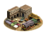

RTR: Imperium Surrectum
RTR: Imperium SurrectumHunters
3 levels, each replacing the one before it — you upgrade in place rather than building alongside.
Hunting Grounds (Rural) → Fur Market (Rural) → Wild Animals Supply (Rural)
Levels at a glance
| Level | Cost | Build time | Minimum settlement | Upgrades to | Level | Cost | Build time | Minimum settlement | Upgrades to | ||
|---|---|---|---|---|---|---|---|---|---|---|---|
| Hunting Grounds (Rural) | 800 | 2 | town | Fur Market (Rural) | Fur Market (Rural) | 3,500 | 3 | large town | Wild Animals Supply (Rural) | ||
 | Wild Animals Supply (Rural) | 10,000 | 5 | city | — |
Costs in denarii, build time in turns.
Hunting Grounds (Rural)

The wild whispers, but only hunters hear. A place for those who pursue prey and the thrill of the chase.
Hunting, an art so ancient it’s practically prehistoric, older than farms, fences, and possibly even fire, if you believe the old tales.
Long before crops were sown, wild game filled the pots of those brave enough to chase it down. While most city folk now prefer the plough to the spear, there remain those who take to the woods, honouring their ancestors’ ways with each quarry they bring back.
Bringing the wilderness straight to your dinner table, for a price!
For the Romans, it’s a tribute to Diana, the huntress; for the Greeks, it’s under Artemis’s watchful gaze.
Out here, the deer don’t just leap; they bound to escape hungry hunters! The thrill of the chase, the reverent silence (or boisterous shouts), it’s the wild calling, and only a true hunter answers.
The religions of the barbarians were generally more nature-oriented, as they hunted far more than their 'civilised' neighbours. It is possible that the Celtic god Cernunnos, the 'horned god', was connected to the practice, as he shared many traits with other pagan hunting deities.
| Cost | 800 denarii | Build time | 2 turns | Minimum settlement | town | Upgrades to | Fur Market (Rural) |
Requirements — all of these must hold before this level can be built.
- any faction
- the region does not have the hidden resource
nobuild(nobuilding) - the region has the wild animals resource
- no building tagged
rural_exploitsis built or queued here (no_other_rural_exploits) - Government Building
Show the condition as the game files write it
factions { all, } and nobuilding and resource wild_animals and no_other_rural_exploits and requires_gov
What it does
Show 2 effects that apply only in the circumstances shown
- +1 trade income — only when
faction_sed_estate_farming - +1 population growth — only when
not faction_sed_estate_farming
Fur Market (Rural)

Pelts, bargains, and a wild tale (or ten). A lively place where wit and pelts are worth their weight in coin.
Trading fur is both profitable and entertaining; a marketplace where the pelts are almost as prized as the tales that come with them.
Here, merchants haggle over wolf hides and hares, spinning stories that make the simplest hunt sound like a Herculean labour. Soldiers stock up for warmth, citizens for fashion, and the merchants laugh all the way to the coin purse.
From sleek fox pelts to shaggy wolf hides, and from warm cloaks to outrageous hats, every fur has its value, and a price only the clever can negotiate.
| Cost | 3,500 denarii | Build time | 3 turns | Minimum settlement | large town | Upgrades to | Wild Animals Supply (Rural) |
Requirements — all of these must hold before this level can be built.
- any faction
- the region does not have the hidden resource
nobuild(nobuilding) - the region has the wild animals resource
- Government Building
Show the condition as the game files write it
factions { all, } and nobuilding and resource wild_animals and requires_gov
What it does
- +2 trade income
- +1 public order (happiness)
Wild Animals Supply (Rural)

Pelts, bargains, and a wild tale (or ten). A lively place where wit and pelts are worth their weight in coin.
Trading furs and other pelts is both profitable and entertaining; a marketplace where the pelts are almost as prized as the tales that come with them.
Here, merchants haggle over wolf hides and hares, spinning stories that make the simplest hunt sound like a Herculean labour. Soldiers stock up for warmth, citizens for fashion, and the merchants laugh all the way to the coin purse.
From sleek fox pelts to shaggy wolf hides and exotic panther skins, and from warm cloaks to outrageous hats, every fur has its value, and a price only the clever can negotiate.
| Cost | 10,000 denarii | Build time | 5 turns | Minimum settlement | city |
Requirements — all of these must hold before this level can be built.
- any faction
- Local Market at Local Market or above is built here
- the region does not have the hidden resource
nobuild(nobuilding) - the region has the wild animals resource
- anywhere in your empire does not have the hidden resource
wild_animals_supply_built(not_wild_animals_supply_built) - Direct Rule or Homeland
Show the condition as the game files write it
factions { all, } and building_present_min_level market market and nobuilding and resource wild_animals and not_wild_animals_supply_built and direct_govs
What it does
- +3 trade income
- +2 public order (happiness)
Show 1 effect that apply only in the circumstances shown
- (Faction) Additional happiness bonus for arena's (tier 3-4)(can stack with slave trade bonus) — only when
factions { roman, }
What the shorthands in those conditions stand for (6)
| Shorthand | Stands for | Shorthand | Stands for | Shorthand | Stands for |
|---|---|---|---|---|---|
direct_govs | building_present governmentC or building_present governmentD | faction_sed_estate_farming | factions { paeonia, kush, timbuktu, cappadocia, chrysaoria, cilicians, lycia, pontus, armenia, armenia_minor, colchians, iberians, sophene, commagene, egypt, acarnania, achaea, acragas, aetolia, argos, athens, boeotia, bosporan, byzantium, chersonesus, chios, cius, elis, emporion, gortyn, heraclea_pontica, issa, knossos, kydonia, lyttos, massalia, messene, miletus, olbia, pentapolis, priene, rhodes, selge, sinope, sparta, syracuse, taras, thessaly, trapezus, sarsinates, cyzicus, antigonid, bactria, cyrene, histria, epirus, lysiad, megalopolis, carmo, asta, arse, pergamon, ptolemaic, seleucid, ptolemaic_rebels, seleucid_rebels, seleucid_rebels2, mauryan, indians, volsinii, picentes, sarsinates, bruttians, lucanians, mamertines, messapians, capua, italics, arados, tyre, hasmonean, osrhoene, sidon, characene, atropatene, chorasmia, persis, parni, carthage, gades, roman, romans_julii, roman_rebels_1, roman_rebels_2, roman_senate, bithynia, cabyle, odrysians, } | no_other_rural_exploits | no_building_tagged rural_exploits queued |
nobuilding | not hidden_resource nobuild | not_wild_animals_supply_built | not hidden_resource wild_animals_supply_built factionwide | requires_gov | building_present governmentA or building_present governmentB or building_present governmentC or building_present governmentD or not is_player |